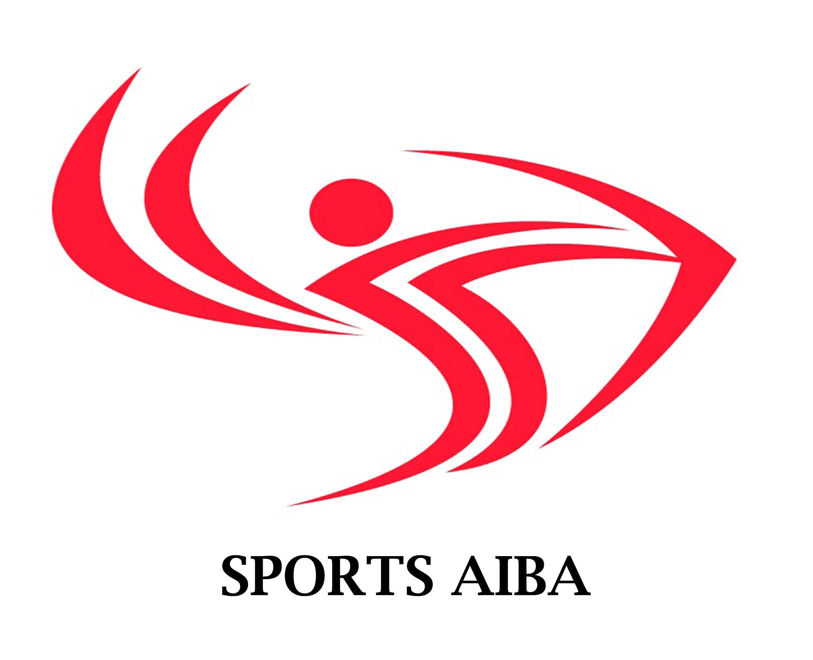

Army Institute of Business Administration (AIBA), Sylhet
Jalalabad Cantonment, Sylhet, Bangladesh
Sports AIBA - Certificate Verification & Management System (CVMS)

About CVMS
The Certificate Verification & Management System (CVMS) is designed to help students and institutions efficiently verify and manage certificates.